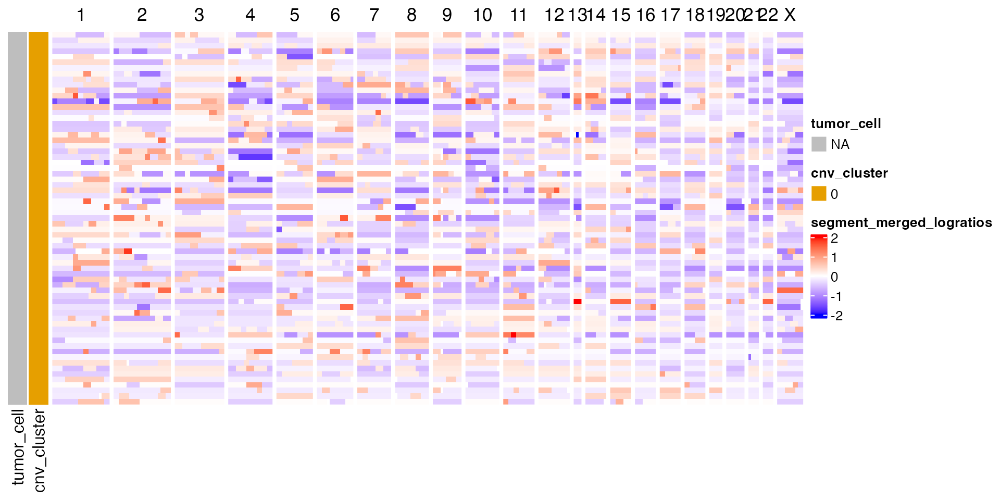

Introduction
We start by loading scatools and ArchR, as
well as the filepath to an example fragments.bed.gz file
containing fragments from 100 normal mammary cells. This bed file was
generated using the reformatFragmentFiles() function from
the ArchR package.
Note this vignette is currently set up with dummy normal data and is purely intended to demonstrate package functionality. There are no CNV changes in the test data.
Installation
You can install the development version of scatools from GitHub with:
devtools::install_github("mjz1/scatools")Example
We start by loading scatools and ArchR, as
well as the filepath to an example fragments.bed.gz file
containing fragments from 100 normal mammary cells. This bed file was
generated using the reformatFragmentFiles() function from
the ArchR package.
Note that all steps in this vignette work with a list of fragment files from multiple samples as well.
ncores <- 4 # Adjust accordingly
fragment_file <- system.file("extdata", "fragments.bed.gz", package = "scatools")
names(fragment_file) <- "test_sample"Now we process this data using scatools. Helper
functions help us to create GenomicRanges bins, and compute
GC content for downstream usage. Here we demonstrate using 10Mb
bins.
# Generate bins
bins <- get_tiled_bins(bs_genome = BSgenome.Hsapiens.UCSC.hg38::BSgenome.Hsapiens.UCSC.hg38, tilewidth = 1e7)A convenience wrapper is provided to perform the analysis
sce <- run_scatools(
sample_id = names(fragment_file),
fragments = fragment_file,
outdir = "./example/",
verbose = TRUE,
overwrite = TRUE,
force_arrow = TRUE,
ncores = ncores,
bins = bins
)Plot the results using the dittoSeq package.
library(dittoSeq)
#> Loading required package: ggplot2
library(patchwork)
p1 <- dittoDimPlot(sce, var = "clusters")
p2 <- dittoDimPlot(sce, var = "tumor_cell") + scale_color_manual(values = col_tumor_cells(), name = "Tumor cell")
#> Scale for colour is already present.
#> Adding another scale for colour, which will replace the existing scale.
p1 + p2 & theme(aspect.ratio = 1)
We can visualize the results as a heatmap.
library(ComplexHeatmap)
sce <- sce[, order(sce$tumor_cell, sce$clusters)]
col_clones <- dittoColors()
col_clones <- col_clones[1:length(unique(sce[["clusters"]]))]
names(col_clones) <- levels(factor(sce[["clusters"]]))
left_annot <- ComplexHeatmap::HeatmapAnnotation(
tumor_cell = sce[["tumor_cell"]],
cnv_cluster = sce[["clusters"]],
col = list(tumor_cell = col_tumor_cells(), cnv_cluster = col_clones),
which = "row"
)
p_ht_cna <- cnaHeatmap(sce, assay_name = "segment_merged_logratios", clust_annot = left_annot, col_fun = logr_col_fun())
p_ht_cna
Or plot individual cells
# Plot the first five cells
plot_cell_cna(sce = sce, cell_id = 1:5, assay_name = "logr_modal")
#> Warning: Removed 9 rows containing missing values (`geom_segment()`).